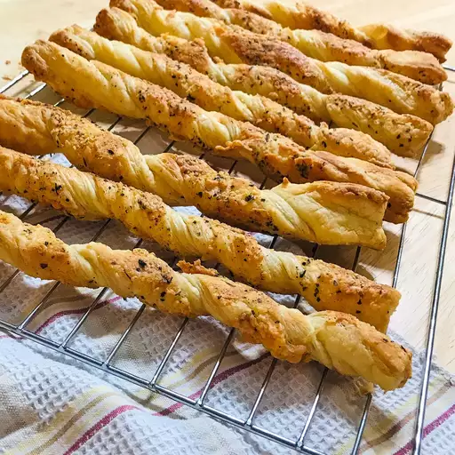

Cheese Sticks

Ingredients
- 1/2 (17.5 ounce) package frozen puff pastry
- 2 Teaspoons olive oil
- 1 pinch of salt and freshly ground black pepper to taste
- 1 pinch cayenne pepper or to taste
- 1/4 cup shredded white Chedder chese
- 5 tablesppons freshly shredded Parmigiano-Reggiano cheese,divided
Steps
- Preheat oven to 400 degrees F (200 degrees C). Line a baking sheet with parchment paper or a silicone baking mat.
- Place a sheet of frozen puff pastry dough onto a floured work surface and allow dough to thaw just until it can be unfolded. Unfold dough into a flat sheet; brush top of puff pastry dough with olive oil. Season with salt, black pepper, and cayenne pepper.
- Sprinkle white Cheddar cheese and 1/4 cup Parmigiano-Reggiano cheese onto the dough, covering the surface. Top with a piece of plastic wrap; press cheese and seasonings firmly into the dough with your fingers or by laying a sheet pan onto the dough over the plastic and pressing it down.
- Remove plastic and use a pizza cutter or sharp knife to cut the dough down the seam lines into thirds; cut each third lengthwise into thirds for a total of 9 breadsticks.
- Pick up a dough strip, place it seasoned side down on the work surface, and twist from both ends 8 or 9 times to make a rolled tube of dough with the seasoned side out. Place breadsticks onto prepared baking sheet.
- Sprinkle remaining 1 tablespoon Parmigiano-Reggiano cheese over the sticks. Roll the sticks lightly to even up their shapes and pick up and press any dropped cheese onto the surfaces.
- Bake in the preheated oven for about 10 minutes; flip and continue baking until breadsticks are browned and crisp, 10 to 20 more minutes. If you pick up a stick by one end and it droops, bake for several more minutes. Cool on a wire rack before serving.